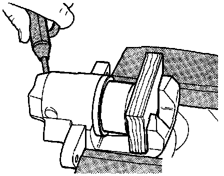
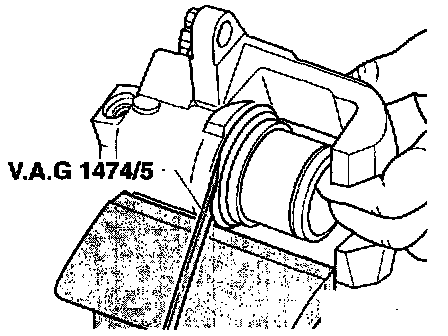
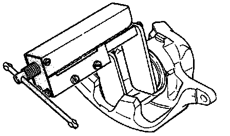

Lucas/Girling Caliper
Exploded View Of Lucas/Girling Front Caliper:

Component Notes And Information
NOTE:
^ Suring service procedures, refer to the illustration above and the information below.
^ When repairing, apply a thin coat of brake fluid to cylinders, pistons and seals. Install all parts in repair kit
^ During removal and installation procedures, refer to the component location illustration above and component notes below
1 Protective cap
2 Bleeder valve
- Before tightening lubricate threads lightly with brake fluid
3 Brake caliper housing
4 Self-locking hex bolt
- Tighten to: 35 Nm (26 ft lb)
- Always replace
- Counterhold guide bolts when loosening/tightening
5 Seal
- Remove using a suitable blunt tool
6 Piston
- Coat lightly with brake fluid or brake cylinder paste before installing
7 Protective seal
- Do not damage when inserting piston
8 Brake carrier with guide pins and protective caps
- Supplied as replacement part with pre-lubricated guide bolts and protective caps.
- If protective caps or guide bolts are damaged, install repair kit and lubricate guide bolts with grease pack supplied.
Removal
Caliper Piston Removing:

1. Force piston out of caliper housing with compressed air.
CAUTION: Place a wooden block in the caliper to prevent damage to the piston.
WARNING: Use only enough air pressure to force the piston out.
Caliper Seal Removing:

2. Carefully remove piston seal using modified tool No. VAG 1474/5, or equivalent, refer to procedures below.
CAUTION: When removing, use care to ensure that the cylinder bore is not damaged.

Modifying Wedge Tool No. VAG 1474/5
- Reshape wedge point size in area -a-.
Width -b- = 6 mm (1/4 inch)
- Reshape wedge point to length -c-.
Length -c- = 10 mm (3/8 inch)
- Remove burrs from point of modified wedge.
Installation
Piston Dust Seal Installing:

1. Install dust cap onto piston.
2. Install new piston seal into housing.

3. Lubricate piston and cylinder bore lightly with brake fluid.
4. Hold piston in front of caliper housing and push inner sealing lip into cylinder groove using modified tool No. VAG 1474/5, or equivalent.
Piston Into Caliper Pressing:

5. Press piston into caliper housing.
6. Outer lip of dust boot must slip into groove in piston.